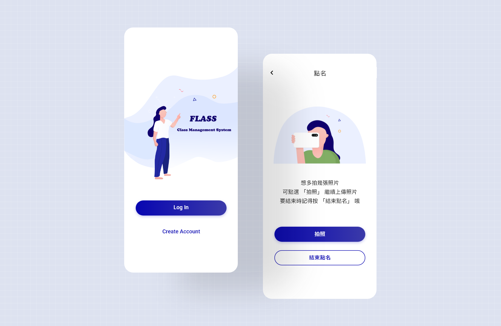
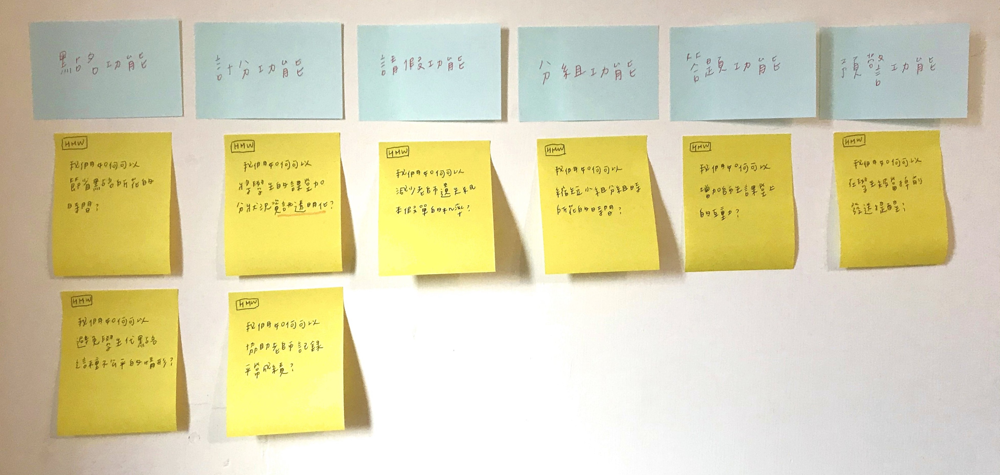
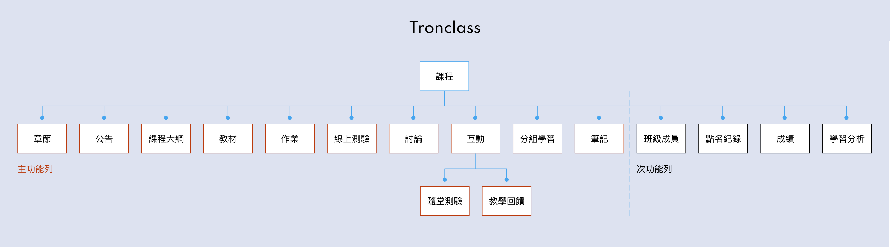
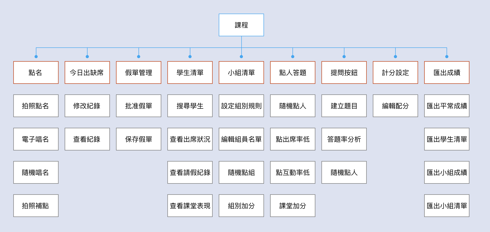
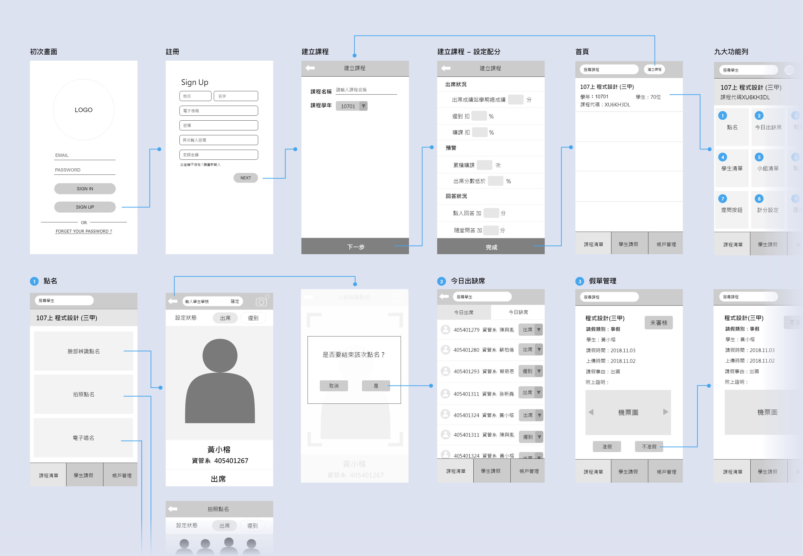
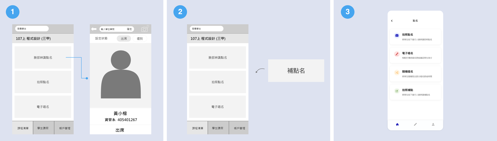
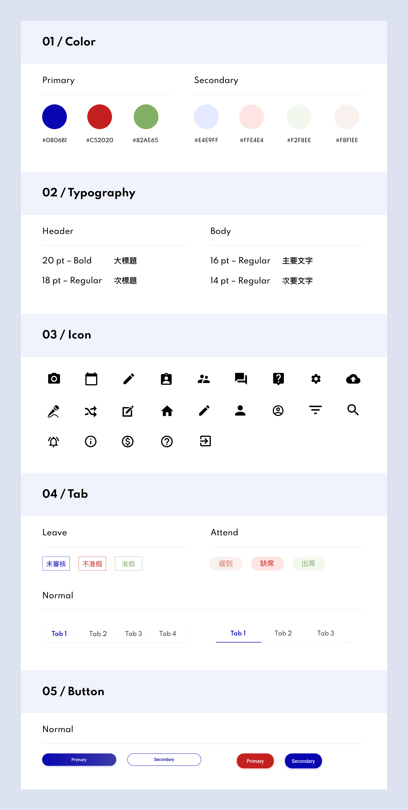
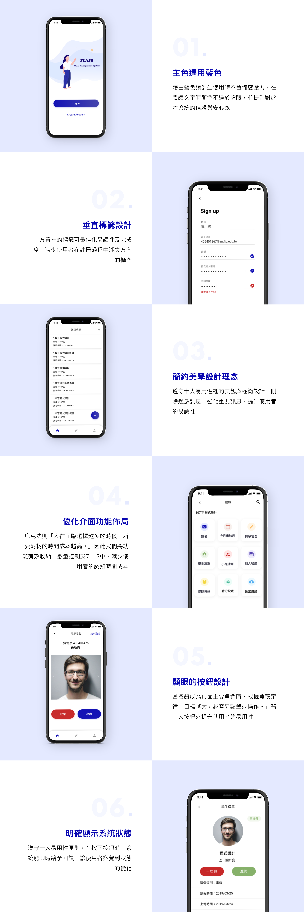

<!DOCTYPE html>
<html lang="en">

<head>
    <meta charset="utf-8">
    <meta http-equiv="X-UA-Compatible" content="IE=edge">
    <meta name="viewport" content="width=device-width, initial-scale=1">
    <!-- The above 3 meta tags *must* come first in the head; any other head content must come *after* these tags -->
    <meta name="description" content="">
    <meta name="author" content="">
    <link rel="icon" href="images/favicon.ico" type="image/x-icon">
    <link rel="shortcut icon" href="images/favicon.ico" type="image/x-icon" />
    <title>Hello | I'm Xaiorong.</title>
    <!-- Bootstrap core CSS -->
    <link href="css/bootstrap.min.css" rel="stylesheet">
    <link rel="stylesheet" href="https://maxcdn.bootstrapcdn.com/font-awesome/4.4.0/css/font-awesome.min.css">
    <!-- Custom styles for this template -->
    <link href="css/style.css" rel="stylesheet">
    <style>
        .works {
            max-width: 1000px;
            height: auto;
            margin: 0 auto;
            padding: 0% 5%;
        }
    </style>
    <!--[if lt IE 9]>
<script src="https://html5shiv.googlecode.com/svn/trunk/html5.js"></script>
<![endif]-->
</head>

<body id="page-top">
    <!-- Navigation -->
    <nav class="navbar navbar-default">
        <div class="container">
            <!-- Brand and toggle get grouped for better mobile display -->
            <div class="navbar-header page-scroll">
                <button type="button" class="navbar-toggle" data-toggle="collapse"
                    data-target="#bs-example-navbar-collapse-1">
                    <span class="sr-only">Toggle navigation</span>
                    <span class="icon-bar"></span>
                    <span class="icon-bar"></span>
                    <span class="icon-bar"></span>
                </button>
                <a class="navbar-brand page-scroll">
                    <h4><b>XIAORONG</b></h4>
                </a>
            </div>
            <!-- Collect the nav links, forms, and other content for toggling -->
            <div class="collapse navbar-collapse" id="bs-example-navbar-collapse-1">
                <ul class="nav navbar-nav navbar-right">
                    <li class="hidden">
                        <a href="#page-top"></a>
                    </li>
                    <li>
                        <a class="page-scroll" href="index.html"
                            style="color: #bb3b0e; border-color: #bb3b0e; font-weight: bold;">Works</a>
                    </li>
                    <li>
                        <a class="page-scroll" href="aboutme.html">About me</a>
                    </li>
                    <li>
                        <a class="page-scroll">Contact me</a>
                    </li>
                </ul>
            </div>
            <!-- /.navbar-collapse -->
        </div>
        <!-- /.container-fluid -->
    </nav>

    <div class="works" style="margin-top: 150px">
        <div>
            <h1 style="margin-top: 8%;font-weight: bold; font-size: 11vmin;">Flass</h1>
            <p
                style="font-family: 'Microsoft JhengHei',sans-serif ;font-size: 16px; font-weight: 350; margin-top: 20px;">
                Face + Class | 結合人臉辨識的師生互動平台
                UX Research, UI Design | 2019</p>
            
            <h1 style="margin-top: 15%;font-weight: bold; font-size: 8vmin;">About Project</h1>
        </div>
        <div>
            <p style="font-size: 28px; font-weight: 400; margin-top: 30px; color:#BB3B0E">Description:</p>
            <p
                style="font-family: 'Microsoft JhengHei',sans-serif ;font-size: 16px; font-weight: 350; margin-top: 20px;">
                此專案為畢業專題，與人臉辨識公司產學合作。Flass
                是一個師生互動平台，主要功能為利用人臉辨識達成快速點名與分組，並強調資訊透明化，讓師生在課堂上的加分、出席、回答狀況皆可即時查看，同時可線上請假，減少紙本假單遺失的情形。</p>
        </div>
        <div>
            <p style="font-size: 28px; font-weight: 400; margin-top: 40px; color:#BB3B0E">Role:</p>
            <p style="font-size: 16px; font-weight: 300; margin-top: 20px;">UX Research, UI Design</p>
        </div>


        <div>
            <p style="font-size: 28px; font-weight: 400; margin-top: 40px; color:#BB3B0E">Deliverables:</p>
            <p style="font-size: 16px; font-weight: 350; margin-top: 20px;">User Research & Interview<br>Problems Analysis<br>Competitive Product Analysis<br>Wireframe<br>UI Flow<br>UI Design Guideline<br>Mockups<br>Prototype
            </p>
        </div>
        <div>
            <p style="font-size: 28px; font-weight: 400; margin-top: 40px; color:#BB3B0E">Software:</p>
            <p style="font-size: 16px; font-weight: 350; margin-top: 20px;">Adobe XD<br>Animaker
            </p>
        </div>

        <div>
            <h1 style="margin-top: 15%;font-weight: bold; font-size: 8vmin;">Problem</h1>
            <p style="font-size: 20px; font-weight: 400; margin-top: 30px;">
                How might we ... </p>
            <p
                style="font-family: 'Microsoft JhengHei',sans-serif ;font-size: 16px; font-weight: 350; margin-top: 10px;">
                " 我們如何可以結合人臉辨識系統提供一個完善的師生互動平台？ "</p>
        </div>

        <div>
            <h1 style="margin-top: 15%;font-weight: bold; font-size: 8vmin;">Survey</h1>
            <p
                style="font-family: 'Microsoft JhengHei',sans-serif ;font-size: 16px; font-weight: 350; margin-top: 40px;">
                使用者主要為：老師、學生，我們針對這兩種角色進行簡易訪談，統整後得出在課堂中經常遇到的幾項痛點 — </p>
                <p style="font-size: 20px; font-weight: 400; margin-top: 30px;">
                    Teacher :</p>
            <p
                style="font-family: 'Microsoft JhengHei',sans-serif ;font-size: 16px; font-weight: 350; margin-top: 10px;">
                • 口頭點名耗時、雷達點名學生因版本不同容易漏點、數字點名與簽到代點名機率高<br>
                • 容易遺失學生紙本假單<br>
                • 無從得知學生學習狀況<br>• 原課堂使用的系統功能過於複雜，不易操作<br>• 經常問問題無人回應不知道該點誰回答</p>

                <p style="font-size: 20px; font-weight: 400; margin-top: 30px;">
                    Student :</p>
            <p
                style="font-family: 'Microsoft JhengHei',sans-serif ;font-size: 16px; font-weight: 350; margin-top: 10px;">
                • 平時成績資訊不透明，期末易產生糾紛<br>• 請假流程太繁瑣，時常因為忘記而被記曠課 </p>

        </div>
        <div>
            <h1 style="margin-top: 15%;font-weight: bold; font-size: 8vmin;">Ideation</h1>
            <p style="font-size: 28px; font-weight: 400; margin-top: 40px;color:#BB3B0E">
                How Might We</p>
            <p
                style="font-family: 'Microsoft JhengHei',sans-serif ;font-size: 16px; font-weight: 350; margin-top: 20px;">
                根據上述問題及痛點進行功能上的發想，利用 how might we 發散到收斂的整個過程，讓團隊更確定主題方向及需求所在，並明確地找出解決之道。在此階段我們將需求轉化成功能，大致可以分為以下功能：點名、計分、請假、分組、答題、預警。
            </p>

            
            <p style="font-size: 28px; font-weight: 400; margin-top: 60px;color:#BB3B0E">
                Competitive Product Analysis</p>
            <p
                style="font-family: 'Microsoft JhengHei',sans-serif ;font-size: 16px; font-weight: 350; margin-top: 20px;">
                在訪談過程中，有幾位使用者認為原學校使用的課堂系統功能過於混雜，不易操作導致放棄使用。<br>因此我們也將課堂普遍最常使用的 Tronclass 課程管理平台進行競品分析。</p>

            
            <p style="font-size: 20px; font-weight: 400; margin-top: 30px;">
                Problems :</p>
            <p
                style="font-family: 'Microsoft JhengHei',sans-serif ;font-size: 16px; font-weight: 350; margin-top: 10px;">
                • 不符合 7 加減 2 法則，功能列已超過 9 項，導致增加用戶操作時的負荷量。<br>• 點名時經常因師生的系統版本不同而導致點名失敗，需耗費額外時間手動輸入點名。<br>• 分組效率不彰，須由學生繳交名單再由老師端一一輸入。<br>•
                有些功能使用率極低，統整每門課皆未被使用的功能：章節、討論、筆記、學習分析。</p>
            <p style="font-size: 20px; font-weight: 400; margin-top: 30px;">
                Feature :</p>
            <p
                style="font-family: 'Microsoft JhengHei',sans-serif ;font-size: 16px; font-weight: 350; margin-top: 10px;">
                • 主要特色為方便師生課堂教材的管理及作業繳交，讓師生不用面對面就能輕鬆解決關於課程的需求及問題。</p>
            <p style="font-size: 28px; font-weight: 400; margin-top: 60px;color:#BB3B0E">
                Conclusion </p>
            <p
                style="font-family: 'Microsoft JhengHei',sans-serif ;font-size: 16px; font-weight: 350; margin-top: 20px;">
                • 經過以上分析，我們將 Flass 系統的 TA 族群設定為大學校園的師生。<br>• 主要特色定為透過人臉辨識系統節省點名及分組時間，強化師生課堂互動，讓老師更加了解學生的學習狀況，且將分數透明一致化。</p>
                <p
                style="font-family: 'Microsoft JhengHei',sans-serif ;font-size: 16px; font-weight: 350; margin-top: 40px;">
            此為老師端的資訊架構圖↓↓↓</p>
                
                <p style="font-size: 20px; font-weight: 400; margin-top: 40px;">
                    Challenge :</p>
                    <p
                style="font-family: 'Microsoft JhengHei',sans-serif ;font-size: 16px; font-weight: 350; margin-top: 10px;">
                在前期發想階段，我們發現課堂互動系統有一些功能若以電腦操作來說會比較順暢，如教材上傳、線上考試、建立題目等。但因時程壓力及資源有限的情況下，是否還能再開發網頁版？這時我們該如何取捨？</p>
                <p style="font-size: 20px; font-weight: 400; margin-top: 20px;">
                    Solution :</p>
                    <p
                style="font-family: 'Microsoft JhengHei',sans-serif ;font-size: 16px; font-weight: 350; margin-top: 10px;">
                    我們參考了最小可行性產品的思維，在還沒完全確認市場需求時，採取優先開發主要特色功能，盡可能減少成本消耗，因此將開發 Web 版本置於未來展望裡。</p>
        </div>

        <div>
            <h1 style="margin-top: 15%;font-weight: bold; font-size: 8vmin;">Wireframe & UI Flow</h1>

            <p
                style="font-family: 'Microsoft JhengHei',sans-serif ;font-size: 16px; font-weight: 350; margin-top: 40px;">
                在與團隊確認功能及初步流程後，利用線框稿勾勒出簡易畫面樣貌，與程式小組確認技術是否可行、功能操作是否順暢，減少後續開發的時間，且因為系統較為複雜，因此利用 UI Flow 再次確認流程是否正確和方便後續開發。</p>
            

            <p style="font-size: 20px; font-weight: 400; margin-top: 40px;">
                Challenge :</p>
                <p
            style="font-family: 'Microsoft JhengHei',sans-serif ;font-size: 16px; font-weight: 350; margin-top: 10px;">
            在流程設計階段，因人臉辨識技術複雜，有些設計會導致無法被實現，是如何應對的？</p>
            <p style="font-size: 20px; font-weight: 400; margin-top: 20px;">
                Solution :</p>
                
                <p
            style="font-family: 'Microsoft JhengHei',sans-serif ;font-size: 16px; font-weight: 350; margin-top: 10px;">
                與負責程式開發的組員密切溝通，當發現不可行時則討論替代方案，在此階段確保每項功能皆可實現才著手 UI 設計。</p>
                
                <p
            style="font-family: 'Microsoft JhengHei',sans-serif ;font-size: 16px; font-weight: 350; margin-top: 10px;">
                如：<br>圖一，點名功能裡的「臉部辨識點名」，原設計情境為老師於講台上利用手機掃學生的臉即可立即辨識出席與否。但因即時影音串流技術 ( RTSP ) 現階段尚未開發出來，因此我們將「拍照點名」設定為最主要點名功能。</p>
                <p style="font-family: 'Microsoft JhengHei',sans-serif ;font-size: 16px; font-weight: 350; margin-top: 10px;">圖二，原「補點名」的情境設計為老師選擇任一點名方式進行補點，補點完導入「今日出缺席」頁面，但以程式技術來說，無法只更改一位學生的出席紀錄，將會導致原本點到名的學生都變為缺席。因此我們將「補點名」獨立出來與點名區隔。</p>
                <p style="font-family: 'Microsoft JhengHei',sans-serif ;font-size: 16px; font-weight: 350; margin-top: 10px;">圖三，修正完的最終結果。也因為在流程階段花了許多時間討論與修改，因此在介面設計階段並沒有花太多時間。</p>


            
        </div>

        <div>
            <h1 style="margin-top: 15%;font-weight: bold; font-size: 8vmin;">UI Guideline</h1>
           <p
                style="font-family: 'Microsoft JhengHei',sans-serif ;font-size: 16px; font-weight: 350; margin-top: 40px;">
                因為系統分為老師端與學生端，建立 Guideline 不僅能統一兩個系統的視覺風格外，也使程式端開發起來更為便利。</p>
            


            
        </div>

        <div>
            <h1 style="margin-top: 15%;font-weight: bold; font-size: 8vmin;">Design Concept</h1>
            


            
        </div>

        <div>
            <h1 style="margin-top: 15%;font-weight: bold; font-size: 8vmin;">Prototype</h1>
                <div>
                <video style="margin-top: 40px; background: #FFF;" width="100%" height="100%" poster="images/demo/2-12.png" controls>
                    <source src="images/demo/flass.mp4" type="video/mp4">
                </video>
                </div>
            
        </div>

        <div>
            <h1 style="margin-top: 15%;font-weight: bold; font-size: 8vmin;">What I learned</h1>
            <p style="font-size: 20px; font-weight: 400; margin-top: 40px;">
                Cooperation :</p>
            <p
                style="font-family: 'Microsoft JhengHei',sans-serif ;font-size: 16px; font-weight: 350; margin-top: 10px;">
                一項產品並非由設計端就能完成，必須靠著團隊不斷溝通、改善問題，當與他人討論後，將會發現考量點變得更多而靈感也隨之而來。</p>
                <p style="font-size: 20px; font-weight: 400; margin-top: 20px;">
                Listen :</p>
                    <p
                    style="font-family: 'Microsoft JhengHei',sans-serif ;font-size: 16px; font-weight: 350; margin-top: 10px;">在發想階段，接納每個人的點子，將大家的想法集結在一起，容易延伸、創造出更不一樣的火花。</p>
        
            
            
            <p style="text-align: center;font-size: 16px; font-weight: 400; margin-top: 10px">
                2019/6/1 資訊系統專題發表會</p>
        

  
                    
                    <p style="text-align: center;font-size: 16px; font-weight: 400; margin-top: 10px">
                        2019/11/3 大專校院資訊應用服務創新競賽</p>
        </div>

        <div>
            <h1 style="margin-top: 15%;font-weight: bold; font-size: 8vmin;">Others</h1>
            <p
                style="font-family: 'Microsoft JhengHei',sans-serif ;font-size: 16px; font-weight: 350; margin-top: 40px;">
                以下是 Flass 的專題發表介紹片 ↓↓↓</p>
            
            <video style="margin-top: 10px; background: #FFF;" width="100%" height="100%" poster="images/demo/2-11.png" controls>
                <source src="images/demo/flass2.mp4" type="video/mp4">
            </video>
            
            <p style="text-align: center;font-size: 16px; font-weight: 400; margin-top: 10px">
                影片製作軟體：Animaker</p>
        </div>


        <div>
            <h1 style="margin-top: 20%;margin-bottom: 3%;font-weight: bold; font-size: 5vmin;">Thanks for watching. You
                may also like...</h1>
        </div>

        <div id="otherworks">
            <div class="img">
                <a href="https://doublerongrong.github.io/portfolio_2020/ShinKongBankEvent">
                    </a>
            </div>

            <div class="img">
                <a href="https://doublerongrong.github.io/portfolio_2020/Workshop.html">
                    </a>
            </div>

            <div class="img">
                <a href="https://doublerongrong.github.io/portfolio_2020/Calendar.html">
                    </a>
            </div>


        </div>
    </div>


    <footer style="margin-top: 10%;">
        <p>Copyright © 2020 Xaiorong . All rights reserved</p>
    </footer>


</body>


<!-- Bootstrap core JavaScript
			================================================== -->
<!-- Placed at the end of the document so the pages load faster -->
<script src="https://ajax.googleapis.com/ajax/libs/jquery/1.11.3/jquery.min.js"></script>
<script src="js/bootstrap.min.js"></script>
<script src="js/SmoothScroll.js"></script>
<script src="js/theme-scripts.js"></script>


</html>